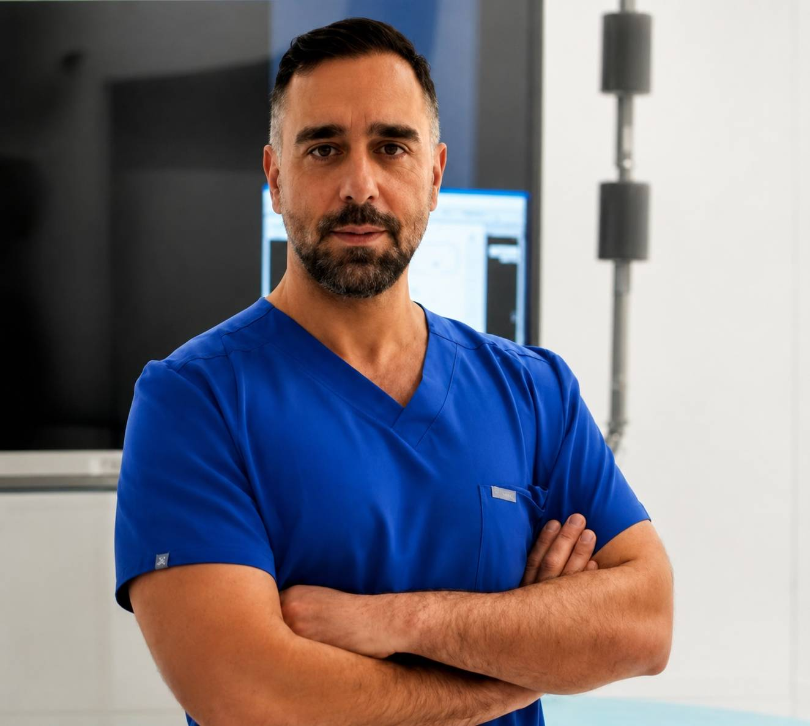

دقت در تشخیص ، آرامش در درمان
دقت در تشخیص ، آرامش در درمان
متخصص رادیولوژی و فلوشیپ اینترونشن
درمان فیبروم رحم بدون جراحی با تکنیک پیشرفته آمبولیزاسیون شریان رحمی (UFE)

دقت در تشخیص ، آرامش در درمان
دکتر رضا واقعی تبار با تمرکز بر روشهای درمانی کمتهاجمی، از تکنیکهای پیشرفته تصویربرداری و آنژیوگرافی برای درمان بیماریهایی استفاده میکند که در گذشته نیازمند جراحیهای سنگین بودند.
هدف کلینیک آرامیس ارائه درمان دقیق، ایمن و مبتنی بر جدیدترین روشهای رادیولوژی مداخلهای با کمترین آسیب به بدن و کوتاهترین دوره نقاهت است.
استفاده از تصویربرداری پیشرفته برای هدایت دقیق مراحل درمان
انتخاب بهترین روش درمانی متناسب با شرایط هر بیمار
انجام اقدامات مداخلهای با استانداردهای روز پزشکی
همراهی بیمار از اولین مشاوره تا بعد از درمان
فیبروم رحم یکی از شایعترین تودههای خوشخیم رحم است که میتواند باعث خونریزی شدید، درد لگنی، احساس فشار، کمخونی و مشکلات مرتبط با کیفیت زندگی شود.
در روش آمبولیزاسیون فیبروم رحم، پزشک از طریق یک مسیر عروقی بسیار ظریف، ذرات مخصوص را به عروق تغذیهکننده فیبروم هدایت میکند. با کاهش خونرسانی، فیبروم به مرور کوچک شده و علائم بیمار کاهش پیدا میکند.
بررسی علائم، سوابق پزشکی و تصاویر تشخیصی بیمار
بررسی MRI یا سونوگرافی برای انتخاب بهترین روش درمان
ورود کاتتر ظریف از مسیر عروق و هدایت دقیق آن
کاهش خونرسانی فیبروم و شروع روند کوچک شدن آن
کنترل روند بهبودی و پاسخ بدن به درمان
بدون نیاز به جراحی باز و برش شکم
گزینهای مناسب برای بیمارانی که تمایل به حفظ رحم دارند
بازگشت سریعتر به فعالیتهای روزمره
بهبود علائم ناشی از فیبروم در بسیاری از بیماران
زمان کوتاهتر نسبت به بسیاری از روشهای جراحی
انجام درمان با کنترل دقیق تصویربرداری
نمونهبرداری دقیق از ندولهای تیروئید تحت هدایت سونوگرافی.
نمونهبرداری از کبد با هدایت تصویربرداری و دقت بالا.
نمونهبرداری از کلیه برای تشخیص دقیق بیماریها.
نمونهبرداری از استخوان و ضایعات اسکلتی با هدایت CT.
درمان غیرجراحی فیبروم با تکنیک UFE
بررسی و درمان مشکلات عروقی لگن
بیوپسی تحت هدایت CT و سونوگرافی
اقدامات مداخلهای برای کنترل خونریزی
بررسی و درمان مشکلات عروقی با روشهای نوین
ارزیابی شرایط بیمار و انتخاب بهترین مسیر درمان
اقدام درمانی
سال تجربه
دقت و رضایت درمانی
پیگیری سریع
بله. آمبولیزاسیون شریان رحمی (UFE) یک روش کمتهاجمی است که بدون جراحی باز انجام میشود و در بسیاری از بیماران باعث کاهش علائم فیبروم میشود.
در این روش رحم برداشته نمیشود و هدف، کنترل فیبروم و حفظ ساختار رحم است.
بسیاری از بیماران پس از یک دوره کوتاه تحت نظر بودن، میتوانند به منزل بازگردند.
انتخاب بیمار مناسب پس از بررسی علائم، اندازه فیبروم، تصاویر پزشکی و شرایط فردی توسط پزشک انجام میشود.
دکتر رضا واقعی تبار
تهران، فرمانیه
+98 912 190 9166